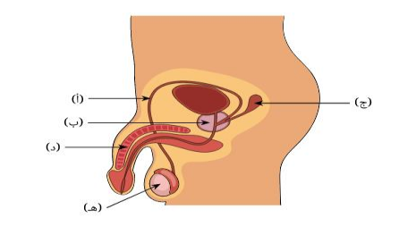
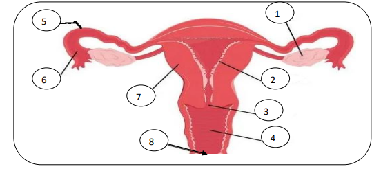
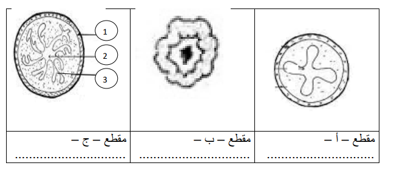
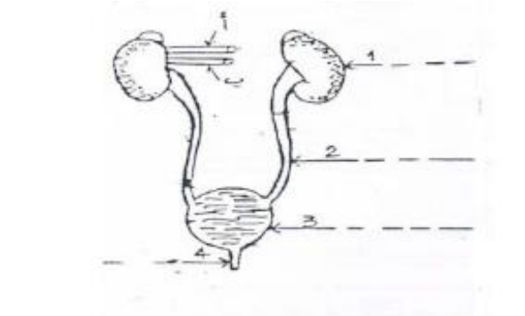
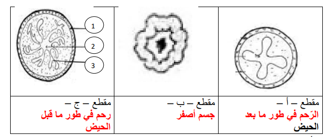

فرض مراقبة عدد 3 في علوم الحياة والأرض
مدرسة النّجمة
المستوى : التاسعة أساسي - الأستاذ : توفيق الحجري
السنة الدراسية : 2022 / 2023
تعليمات عامة
- أجب بدقة على الأسئلة المطروحة.
- اعتن بجودة الخط وتنظيم الإجابة.
- الرسوم والبيانات يجب أن تكون واضحة ومقروءة.
الجزء الأوّل (12 نقطة)
التّمرين الأوّل : الجهاز التّناسلي عند الرّجل (7,5 نقطة)

1) ضع البيانات المناسبة على الوثيقة. (2,5 ن)
- أ :
- ب :
- ج :
- د :
- ٥ :
2) ما هي نتيجة استئصال العنصر (٥)؟ (2 ن)
3) أذكر العنصر المشترك بين الجهازين البولي والتناسلي في هذا الجهاز. (0,5 ن)
4) كوّن جملة ذات معنى علمي مستعينا بالمفردات التّالية. (1,5 ن)
بربخ - أنبوب منوي - حيوانات منويّة - خصية
التّمرين الثّاني : الجهاز التّناسلي عند المرأة (4,5 نقطة)

1) قمنا باستئصال المبيض الأيمن وربط قناة البيض اليسرى. فسّر نتيجة ذلك. (1,5 ن)
2) ضع البيانات المناسبة على الوثيقة. (2 ن)
- 1 : - 2 :
- 3 : - 4 :
- 5 : - 6 :
- 7 : - 8 :
3) صنّف المعطيات التّالية بالجدول أسفله. (2 ن)
قضيب - بروز الثّديين - رحم - ظهور الشّعر في الإبطين والعانة - خصيتين - حيض - تضخّم الصّوت - القذف
| الصنف | الأنثى | الذكر |
|---|---|---|
| صفات جنسيّة أوّليّة | ||
| صفات جنسيّة ثانويّة |
الجزء الثّاني (8 نقاط)
التّمرين الأوّل : مقاطع عرضيّة في أجزاء من الجهاز التّناسلي لمرأة (4 نقاط)

1) تعرّف إلى كلّ مقطع. (1,5 ن)
- مقطع أ :
- مقطع ب :
- مقطع ج :
2) ضع البيانات المناسبة على المقطع - ج -. (0,75 ن)
- 1 : - 2 : - 3 :
3) صف ما يحدث بالطّور الذي يجسّمه المقطع - ج -. (0,75 ن)
4) حدّد العلاقة بين المقطع - ب - والمقطع - ج -. (1 ن)
التّمرين الثّاني : الجهاز البولي عند الإنسان (4 نقاط)

1) ضع البيانات الموافقة للأرقام من 1 إلى 4. (2 ن)
- 1 : - 2 :
- 3 : - 4 :
2) أدّى تحليل بعض مكوّنات كلّ من الوعاءين "أ" و "ب" إلى النتائج التّالية. (2 ن)
| المكوّنات | الوعاء "أ" | الوعاء "ب" |
|---|---|---|
| الحمض البولي (غ/ل) | 0,04 | 0,08 |
| البولة (غ/ل) | 0,30 | 0,50 |
| ملح الصوديوم (غ/ل) | 3,20 | 3,50 |
| بروتيدات (غ/ل) | 70 | 70 |
أ - استنادا على معطيات الجدول تعرّف إلى الوعاءين "أ" و "ب" مع التّعليل. (2 ن)
+ الوعاء "أ" :
+ الوعاء "ب" :
الإصلاح - Correction du devoir
الجزء الأوّل : التّمرين الأوّل - الإصلاح (7,5 نقاط)
1) البيانات :
- أ = قناة البيض / ب = بروستات / ج = حويصلة منوية / د = قضيب / ٥ = خصية
2) نتيجة استئصال العنصر (٥ = الخصية) : ينتج عن استئصال الخصية العقم وضمور الصّفات الجنسيّة الثّانويّة (كانعدام ظهور شعر العانة والإبطين وتضخّم الصوت وعدم إنتاج الحيوانات المنوية).
3) العنصر المشترك بين الجهازين البولي والتّناسلي : هو الإحليل (مجرى البول).
4) الجملة العلمية : تنتج الخصية الحيوانات المنويّة في مستوى الأنبوب المنوي ويقع نضجها في البربخ.
الجزء الأوّل : التّمرين الثّاني - الإصلاح (4,5 نقاط)
1) تفسير نتيجة استئصال المبيض الأيمن وربط قناة البيض اليسرى :
ينتج عن ذلك العقم (عدم إمكانية الإنجاب) لأنّ المبيض الأيسر المتبقي ينتج البويضات لكن لا يمكنها المرور عبر قناة البيض اليسرى المربوطة. أمّا الصّفات الجنسيّة الثّانويّة فتتواصل كما يعمل الرّحم بصفة دوريّة لأنّ الهرمونات التي يفرزها المبيض الأيسر تنقل عن طريق الدّم.
2) البيانات :
1 = مبيض / 2 = بطانة الرّحم / 3 = عنق الرّحم / 4 = مهبل / 5 = قناة البيض / 6 = قمع فالوب / 7 = عضلة الرّحم / 8 = فتحة تناسليّة
3) تصنيف المعطيات :
| الصنف | الأنثى | الذكر |
|---|---|---|
| صفات جنسيّة أوّليّة | رحم | قضيب - خصيتين |
| صفات جنسيّة ثانويّة | بروز الثديين - ظهور الشّعر في الإبطين والعانة - الحيض | ظهور الشعر في الإبطين والعانة - تضخم الصّوت - القذف |
الجزء الثّاني : التّمرين الأوّل - الإصلاح (4 نقاط)

1) تعريف كلّ مقطع :
- مقطع أ : الرّحم في طور ما بعد الحيض (بطانة رحم رقيقة، بداية إعادة البناء).
- مقطع ب : جسم أصفر (في المبيض، يفرز البروجستيرون والأستروجين).
- مقطع ج : رحم في طور ما قبل الحيض (بطانة رحم سميكة، شبيك رحمي متكوّن).
2) بيانات المقطع ج : 1 = عضلة الرّحم / 2 = جوف الرّحم / 3 = بطانة الرّحم
3) وصف الطور المجسّم بالمقطع ج (طور ما قبل الحيض) : خلال هذا الطور يتواصل نموّ بطانة الرّحم وتتكاثف الشّعيرات الدّمويّة وتستطيل الغدد الأنبوبيّة فيتكوّن الشّبيك الرّحمي وذلك كي تتهيّأ بطانة الرّحم لاستقبال المضغة وتعشيشها.
4) العلاقة بين المقطع ب (الجسم الأصفر) والمقطع ج (الرحم طور ما قبل الحيض) : يراقب الجسم الأصفر نموّ بطانة الرّحم وتكوّن الشبيك الرّحمي بواسطة هرموني البروجستيرون والأستروجين المفرزان من قبله وينقلان في الدّم.
الجزء الثّاني : التّمرين الثّاني - الإصلاح (4 نقاط)
1) البيانات الموافقة للأرقام :
1 = كلية يسرى / 2 = حالب أيسر / 3 = مثانة / 4 = إحليل
2) تعريف الوعاءين "أ" و "ب" مع التعليل :
+ الوعاء "أ" : وريد كلوي.
التّعليل : كمّية الحمض البولي (0,04 غ/ل) والبولة (0,30 غ/ل) وملح الصّوديوم (3,20 غ/ل) به ضئيلة (منخفضة) مقارنة بالوعاء "ب"، كما يحتوي على بروتيدات (70 غ/ل). وهذا يدل على أن الدم قد تمت تصفيته في الكلية وعاد عبر الوريد الكلوي.
+ الوعاء "ب" : شريان كلوي.
التّعليل : كمّية الحمض البولي (0,08 غ/ل) والبولة (0,50 غ/ل) وملح الصّوديوم (3,50 غ/ل) به مرتفعة (كبيرة) مقارنة بالوعاء "أ"، كما يحتوي على بروتيدات (70 غ/ل). وهذا يدل على أن الدم لم تتم تصفيته بعد ويحمل الفضلات النيتروجينية إلى الكلية.
ملاحظة : البروتيدات توجد بنفس الكمية في كلا الوعاءين لأنها لا تُصفّى في الكلية السليمة (جزيئات كبيرة لا تمر عبر المحفظة الكبيبية).